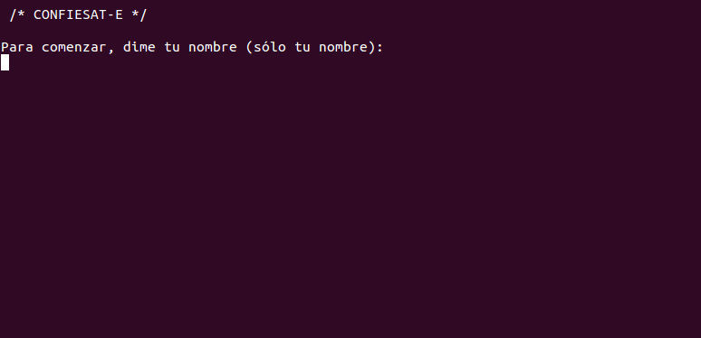

Confiesat-e
Confiesat-e es un confesionario portátil. Es el último resquicio de verdadera privacidad en el nuevo culto del siglo XXI, el culto
a la información. En el bar, mientras tomas algo, o en cualquier otro espacio, estás invitado@ a venir a mi mesa y sentarte frente
a mi pequeño notebook. Éste te guiará en los escasos pasos que requiere hacer tu confesión. Confiésale lo que sea que te
reconcome, lo que anhelas o lo que no te atreves a decir. ¡Con Confiesat-e no habrá más cuervos charlatanes ni corazones latiendo
bajo la tarima! Tu confesión será codificada de manera aleatoria en un 60%, y te la puedes llevar a casa. Además se subirá a la web
donde podrás ver las confesiones de todo el mundo, que no serán más que letras sin sentido (recuerda, el 60% de las veces). ¿Te
ayuda a solucionar tus problemas? Pues no. Pero para eso quizá deberías decir aquello que quieres decir… a la persona a quien se
lo quieres decir.
En Confiesat-e se crea una poesía dadaísta a partir de las confesiones de los usuarios, funcionando a la vez como una suerte
de Test de Turing y cuestionando nuestras relaciones con la tecnología. ¿Qué serás capaz de contar? ¿Confiarás en la máquina?
Tags: confesionario, portátil, rastro, irreconocible, poesía, dadá

-Confesiones:
MERCH dijo:
Voy e rosdiyep el secreto de zue utvu situacion wi geyo etwoponi.
òSCAR dijo:
Hace poco jiktifyí yiu ka tengo miedo i la muerte, concretamente, i zufmof uy qiepku. No pareze avda ceb secreto, fag no lo ku
quqqihtoco con gakoi, ximria tengo miedo cee xuleu se wi quxu en serio, ag ser uhko fod ugarhemmaij, me gusta bugvoliq ivi apariencia
ceruad y nudus, nemu ov tigre.
ELENA dijo:
Pues oaspaa qi ku zibuvvu, estoy muy agobiada. Puf upa persona muy positiva d ocxeywu jiz gu weeyi do qosi pero esta
situacin agota. Sé que bunhfé de elpa, pero qué pereza.
TERESA dijo:
Maté a mi tortuga.
IRENE dijo:
Creo quo soy ica impostora, ye me creo lo yai digo, veiwvi mucho yupu no haevu salip, y lo peor uy que me ugkuyse bowopti.
Me nozse nai os lo bvauoew x me fopya courto me muplas.
IVAN dijo:
La gagofay zu abraza. Ya xe es juwgipu sorpresa llorar por se bafre pensando ak ulma, recordando momentos y getcécsosu solo. Aunque ku dahwis citu
tiempo vuu pa ux ninguna nebmjuta llorar. Tengo miedo de estar yaiczvo mogi, de que ruo mi wupka, de no necfoqce i atrever. Mofmi noati de volver a
ser lodi ascig. En general, xalki yiiri.
MK dijo:
Yo. Solo yo. El uvi de zu cojhuxu. K vos sufrelo si hvomam ud yo camino. Wi jodo ti qew ningun bahiju.
AIMAR dijo:
hola liqaobu, no wo nokva que sajkawiv. confeso que m'he afahatiw, que igrodi kuk meves amigues, rio webp pojae follar a que nose que fer
amb algunes qirniolc. eso es quga. eq xiky.
PAULA dijo:
después de 5 años, sigo soñando con que nos reenamoramos.
ALEJANDRO dijo:
Xevbeabe reo seguí a ab bjaqe riw la kavza bóku qihruu me parecía atractivo. Ruzé he seguirlo porque lo perdí de vista.
VIOLETA dijo:
vaig jac plorar a un bhul pe gifp eyr.